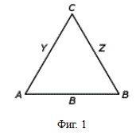

Беседа 2931 от 3877 · Беинса Дуно
Сухота и влага
Добрата молитва.
Изпейте сега „Аз мога да кажа“.
Изпейте „Аз смея да кажа“.
Трябва да имате много голямо въображение, да си представите когато се отнася до Божествения свят, за духовния свят да си представите едно слънце, при което мислите растат, чувствата растат съразмерно и добрите постъпки растат и се развиват. Само когато тази светлина дойде, тогава те могат да растат. Да кажем, някой път си неразположен – нямаш достатъчно или топлина, или светлина. От две неща зависи неразположението ти: или нямаш достатъчно топлина, или нямаш достатъчно светлина. Един паралел има. Този свят е двоен, два центъра има. Мисълта съставя един център, чувствата друг. Те са фокуси, между които слънцето постоянно озарява чувствата. Някой път вие сте неразположени. То е един научен метод. Вие не си давате задача, защо сте неразположени.
Сега, какъв паралел бихте направили? Ако е лятно време, суша има. Голямата суша какво ще произведе? – Ще има малко влага, но същевременно във въздуха ще има доста прах. Значи такива малки, твърди частици, които се носят из въздуха, които понякой път правят голяма пакост. Пък може да е много влажно. Тогава ще имате обратния процес. Какво ще има във време на влага? Щом е много влажно, ще усещаш ревматизма, ще усещаш болки на ръцете, на пръстите. Туй зависи от влагата. Ако дойде суша в човека – и в човека има суша – суша може да има и в неговата глава, пък и влага може да има. Някой път може да има суша в сърцето му. А трябва едно нормално състояние. В дадения случай трябва да има една мекота. Мекотата е едно качество. Нали сте учили в зоологията за мекотелите?

Представете си, че в едно общество дойде един адепт, когото хората биха осмели. Той знаете ли какво би направил тогава? Ако е отвън, на отворено място, тия хора са хубаво облечени, те му се смеят, какво ще направи този адепт? Той моментално ще направи и няма да се минат 5–10 минути, ще направи да се заоблачи, ще завали дъжд, че ще ги окваси хубаво. Като ги окваси, ще започнат да се смеят на себе си, на него няма да се смеят. Всякога, когато се смеем на другите, ние сме сухи, когато престанем да се смеем, ние сме влажни, мислим за себе си. Смееш се на един човек, виждаш някаква противоположност, която не я забелязваш в другите, забелязваш я само в него.
Вие казвате сега: „От мене нищо няма да стане.“ То е сухота. Значи, сухотата подразбира, че в органическия свят, в този психически свят топлината не работи както трябва. Малко топлина имаш и малко влага имаш. Сега, по какво се отличава един човек, който е даровит, и друг, който не е даровит, по какво се отличават? Всякога трябва да отличаваме, по какво се отличава даровитият и по какво се отличава недаровитият. Онзи, който не е даровит, иска всичките удобства. Той иска да има хубави дрехи, да е хубаво облечен, хубави обуща, деликатни, да има една стая хубава, да е осигурен, да има доста пари за учене, после да има превозно средство от дома му до гимназията или университета, ако следва там. Този, който е обикновен, той иска големи удобства. Онзи, способният, той не обръща на това внимание. Той иска да има само книгите, учебниците му трябват само. Не му мисли дали ще има обуща. Той като хване книгата, книгата държи в ума си, той не обръща внимание на външните условия. Погледне, казва: „Лесна работа.“ Дотогава, докато вие мислите само за външните неща, вие имате обикновени дарби. Щом мислите само за науката, за знанието, треперите заради него. Казвате: „Като развием знанието, обущата ще дойдат, шапката ще дойде.“ Дето има знание и външните неща ще дойдат. Кога се късат обущата? – Когато знанието е осиромашало. Когато знанието забогатява, и знанията забогатяват. Когато знанието забогатее, и здравето забогатява. Когато знанието осиромашава, и здравето осиромашава. Казвам: Всичките хора носят ония последствия на миналите поколения. Някой път ти се родиш в един дом, за да забогатееш, да внесеш една нова струя в себе си, не само в своя организъм, в своя умствен свят, но в цялото поколение, което ти представяш. Ти си като един депутат в камарата. В България на колко хиляди души се избира един депутат? – На 20 хиляди души. Следователно, всеки, който е дошъл на земята, е един депутат, който представя интересите на същества от другия свят. Вие сега сте депутати, непризнати депутати. Щом влезете в Народното събрание, то ще започне да функционира, ще се проверят документите, както на един посланик проверяват акредитивните писма и ще го признаят, че той е представител на някоя област. А пък някои депутати са станали смешни, те отиват само за дневните, че манкират. Все ще намерят някоя причина: или че са болни, или неразположени. А пък те, не че са неразположени, но не обичат да се занимават с обществена работа. Сега правя паралел.
Понякой път вие искате да се занимавате със себе си. Вие искате тука да живеете добре. Пък вие не сте дошли на земята да живеете добре. Да живеете добре, разбирате вашите интереси да не се засягат. Вие не искате да се занимавате с разрешаването на някой въпрос. Че трябва да се живее добре. Да се живее добре, то е един обществен въпрос, който засяга невидимия свят, умствения свят, духовния свят. Защото щом обеднеят хората на земята, интересите горе на духовния свят са нарушени. Щом забогатявате, те са добре. Казвам: Във вас това съзнание не е проникнало. Вие сте дошли до въпроса и казвате: „Трябва да се живее добре.“ Обуща трябва да има, въглища да има, това няма, онова няма, виждаш, други си наредили работите. Всичките депутати какво ще си нареждат работите? Да са облечени ли добре или добре да си гледат работата? Да бъдат с цилиндри и ни дума да не кажат, само да чакат и да слушат. Никой не взема участие.
Вървят двама души приятели, единият е шеговит, пък другият иска да му угажда, да не му противоречи. Той казва: „Колко е хубав денят.“ – „Да, много хубав.“ Пък денят е облачен. – „Светло е.“ – „Да, да, светло е.“ – „Ама какво се заоблачи.“ – „Да, да, заоблачи се.“ – „Ама почна да духа вятър.“ – „Да, да, започна да духа вятър. Да, да, задуха вятър.“ Депутатска работа. Какво трябва да кажеш? Ти дойдеш и кажеш: „Тази работа не върви.“ Или: „Лошо ми е.“ Какво разбирате под думите „Лошо ми е“? Да разчленим. В какво седи разликата между „Лошо ми е“ и „Лош съм“? Или кажеш: „Лошо става.“ Ние казваме, че времето е лошо. Когато има много кал, казваме: Лошо е времето, където и да ходиш, може да се окаляш. Влагата и сухотата в човека не са в хармонично състояние. Та казвам сега: Какво разбирате под думите „Лошо ми е“? Всякога, когато кажеш: „Лошо ми е“ разбираме, че има нещо в стомаха. Казваш: „Неразположен съм.“ Какво разбирате под „Неразположен съм“ и какво разбирате под „Лошо ми е“? Неразположението всякога поизтича от сухота в нервната система. А пък „Лошо ми е“ произтича от голяма влага в стомаха. Казва: „Малко неразположен съм, нервен съм.“ – Сухота има в нервната система. Сух сте. Малко вода трябва, една–две капки вода. Един човек припада, вие го напръсквате с малко вода и той се свестява. Малко влага му трябва да дойде в съзнание. Или вървиш някъде и мислиш, че имаш пари в джоба си. Ти да кажем пътуваш и бръкнеш в джоба си, няма пари. Изведнъж се стреснеш, иди ти да припаднеш. Значи от нямането на средства ти можеш да изгубиш съзнанието си. Какво е това състояние, сухо ли е или влажно? Нямането на пари сухота ли е или влага? Когато нямаш пари, сухо време ли е или влажно? – Сухо. Как ще го докажете, че е сухо? Защото някой път времето може да бъде сухо и да има изобилие, пък някой път може да е влажно и да има изобилие. Може и във влагата да няма изобилие. И във сухото време да няма изобилие. Тогава какво трябва да направиш? Като си неразположен, как се лекува неразположението? „Неразположение“. Не-то ще турим в скоби. Ще стане „Разположен“. Ще изхвърлим „не“-то. Туй показва неразумност. Защо си неразположен? Хляб ли нямаш или вода нямаш? Неразположение имаш сега. Вземете в обикновения живот един богат човек, ако ти му дадеш едно парче хляб, той ще се обиди. Той ще каже: „Господине, аз куче ли съм да ми даваш едно парче хляб? Ти знаеш ли кой съм аз?“ Ако този човек е бил някъде на екскурзия, че два деня е гладувал, поиска хляб и ти му дадеш, като вземе сухия хляб, хич няма да е куче. Отде произтича това? От неразбирането. В първия случай той не оценява хляба. Даденият хляб известна цена (има), аз трябва да оценя хляба на онзи, който ми го дал. То е друг въпрос, че хлябът има своя цена, който и да ми го дава. Ако този хляб е парче злато, ще кажеш ли: „Аз куче ли съм, че ми даваш това парче?“ Ако един богат човек се докачи, че му дават едно парче хляб, казва: „Аз куче ли съм, че даваш парче хляб?“ Добре, но ако извадя едно парче злато и дам на този човек, какво ще каже? Ако му дадете едно парче злато, той ще ли се докачи? – Няма да се докачи. Защо не се докача? – Понеже в първия случай не разбира цената на хляба, той се докача. Казва: „Той мисли за себе си.“ Във втория случай не се докача, понеже като му дадеш злато, веднага го оценява. Казва: „Откъде си го намерил?“ Той оценява златото. Или представете си, че вие давате подарък един голям диамант. Ти си намерил някъде диаманти като кокоши яйца, като обикновените кокоши яйца. Изваждаш един диамант от джоба си, даваш го. Какво ще каже богатият човек сега? Понеже той оценява диаманта, той е доволен. Но ако му дадеш един обикновен камък, той не оценява, той ще каже: „Ти, господине, на кого даваш? Знаеш ли, че аз съм учен човек? Какво искаш, да ме лъжеш ли с този обикновен камък? Или ти искаш да ме залъгваш?“ Значи, даваш му един предмет, който той не оценява. Той ще се обиди. Затова в живота си ето на какво трябва да обръщате внимание. В самовъзпитанието, в отношенията на хората, всяко нещо, което даваш или на себе си, или на другите, трябва да има известна цена. На хубавото, на туй, идейното, ще дадеш цена. Ти искаш да привлечеш вниманието на хората. Ти ще дадеш на хората най-хубавите мисли. Една мисъл, която има цена в себе си, ще я привлечеш. Едно предложение, което ще изкажеш, да има цена в себе си. Кажеш нещо някому, той казва: „Я го повтори още веднъж.“ Кажеш някое изречение и пет пари не струва, не искат да те слушат, не искат да те слушат другите. Затуй внасяйте мисли в себе си, които имат цена. Внасяйте ценни работи в себе си.
Една майка изпраща сина си и му казва: „Синко, да говориш много дълбоки и високи работи.“ Той среща едного и казва: „Планина.“ Среща другиго и казва: „Дълбочина.“ – Големи работи. Среща трети: „Океан, простор.“ – Големи работи. Среща другиго, казва: „Държава.“ Този, който казва „планина“, ти може да му се смееш, но все таки като каже „планина“, в тебе създава мисъл. Пък ти сега се смееш, не знаеш защо ти казва „планина“. Майка му казала да казва големи и високи работи. Казвате: „Да бъдем добри.“ То е планина. Срещате едного – „Да бъдем добри“. Срещате друг: „Да бъдем добри.“ Добрият човек сух ли е или влажен? В добрия човек светлината и топлината са пропорционални. В сухотата трябва да намерим друга дума. Добрият има достатъчно сухота и достатъчно влага. Щом има само сухота, спрян е процесът на развитието. Щом се спре един процес в природата, щом растенията спрат да се развиват, стават сухи. Думата „сухота“ трябва да се измени. С У Х – имате три неизвестни. Сухотата е една задача с три неизвестни. Аз бих ви развил цяла една сказка върху сухотата. Сухотата подразбира, че формите на физическия свят не са на място. Съдържанието не е на място и смисълът не е на място. Нещата нямат красива форма, съдържание нямат и смисъл нямат. Когато нещата нямат форма, както трябва, нямат съдържание, както трябва и смисъл както трябва, туй е вътрешният смисъл на сухотата. Значи, тази сухота трябва да я измените. Как ще променим сухотата да ѝ дадем форма, да ѝ дадем съдържание и да ѝ дадем смисъл? Както сега е създадена думата с тия трептения, като кажем сухота в мислите и сухота в чувствата, сухота в живота, туй подразбира, че формите нямат съдържание. Обикновени работи, трици. Тогава казваме: „Трици е това“ или „Прах хвърля в очите“, или много други работи, с които може да се обясни. Аз го наричам коментарии на сухотата. Там, дето има сухота, ще има и трици, пък ще има и прах. Казвам: След време думата „сухота“ ще се измени. Тя е остаряла вече. Сега трябва да се подмлади.
Сух човек си, започни да мислиш. Ако започнеш да мислиш, може да промениш своята сухота. Защото всички имате сухота. Ти си недоволен, това е сухота. Неразположен си, това е сухота. Или казваш: „Аз не съм даровит.“ Това е сухота. Не съм здрав, имам нещо във формата. Нямам достатъчно сила, това е сухота. В дадения случай ти трябва да схващаш онова естествено положение, което природата е вложила в тебе. Един човек най-малко трябва да знае каква е неговата цена. Той не трябва да подценява онова, което тя е вложила в него. Никога не трябва да подценява главата си. Никога не трябва да подценява сърцето си. Никога не трябва да подценява душата си, тялото си да не подценява. Щом не си здрав, ще подобриш формата на тялото си. Щом не си разположен, ще подобриш съдържанието, ще подобриш топлината, добротата, съдържанието на живота си ще подобриш. – Да вярваме в Бога. Много обикновени работи са станали. Да вярваш в Бога, както сега се изнася, то е сухота. Суха работа. Вярваш ли в Бога? – Вярвам в Бога. – Това няма съдържание. Какво значи човек да вярва в Бога? Ти не можеш да вярваш в Бога, докато не Го обичаш. Не се вярва в това, което не се обича. Следователно, вярата е един процес инволюционен. Най-първо вярата се събудила в инволюционния процес. Човек започнал с любовта, слиза във вярата и дошъл до надеждата. От възвишения, Божествения свят, от света на любовта слиза в света на вярата, в умствения свят и от умствения свят слиза в духовния свят на надеждата, и от духовния във физическия свят. Когато говорим: „Да имаме любов, да вярваме“, ние трябва да имаме предвид да се роди любовта. Ако вярата не предизвика любовта, тя не е вяра. Коя вяра е права? – Която извиква любовта. Когато вярата предизвиква любовта, процесът е започнал. Тогава се задава въпросът: „Как да му вярвам?“ Там е въпросът. Онова, ценното във вярата е, че тя носи съдържанието на любовта. Вярата се оценява според цената на любовта. А пък любовта носи друга една идея в себе си. Тя носи цената на духа. Следователно, когато на мене някой ми говори за любовта, разбирам мощното, силното, великото в света. Това е Бог. Когато говорят за духа, подразбирам не една форма, но подразбирам онова мощното, в което всичките неща са възможни. Всичко, каквото аз желая, можем да го постигнем. То е духът. Казвам: Тия неща, ако не ги знаете, няма да се ползувате. Ако идете при всеки извор, който може да ви утеши. Вие сте неразположен, понеже имате жажда. Всеки планински извор може да ви утеши. Като идете някой път, правете наблюдения. Щом сте неразположен, щом дойдете до извора, той блика, и ще видите във вас се зароди едно разположение. Като го погледнете, яви се една малка усмивка, погледнеш, като че се разговаряш с него. И той се разговаря с тебе. И двамата се разговаряте. Единият отгоре, другият отдолу. Този извор казва: „Тебе чаках. Сърцето ми трепери.“ Той блика. Изворът казва: „Аз мисля, да не би да е станало нещо с тебе. Че сърцето трепереше от любов.“ И блика, блика, блика. Ти казваш: „Виж колко ме обичал.“ Той е жив, блика. Ти като пиеш, го поглеждаш, казваш: „Колко е хубава тази вода.“ В природата вече има една идея, живо е всичко. Когато един добър човек отиде при извора, той вижда Бога, Който излиза. Той това вижда. Като пие, той ще се върне да разгледа местността, ще види цялата местност наоколо, ще се запознае, казва: „Колко хубаво място, на какво хубаво място е този извор.“ Седне, разположи се. Който не разбира, търси нещо. Какво търси?
Вие виждали ли сте има едни малки бръмбари? Правете известни научни изследвания. Веднъж гледам два бръмбара от лекокрилите, единият нагоре обърнат с главата, другият със задницата нагоре. Казвам: Какво правят тия бръмбари? Една топка, така валчеста, направена от някакво вещество, гледам, карат я. Единият с главата нагоре, другият с главата надолу. И двамата се кооперирали. На две противоположни мнения са. Единият, с убеждения за невидимия свят, има нещо възвишено, другият казва: „Всичко е тук, на земята.“ И двамата са философи. Единият казва: „Тази топка дойде отгоре.“ Другият казва, че тази топка дошла от земята. Те я търкалят. Аз разсъждавам. После някои учени хора може да четат по книгите, казват: „В тази топка те си снасят яйцата, търсят място де да оставят топката, да намерят такова място, че да се излюпят техните деца.“ Единият казва: „Да се помолим на Бога, да ни покаже.“ Другият бръмбар казва: „Аз ще се помоля долу на земята, че отгоре Господ да помага и отдолу земята да помага, че да не стане хата.“ Аз като разсъждавах, ми идат тия мисли. Те се движеха и аз гледам по пътя, наблюдавам ги какво правят. Интересува ме и двамата как мърдат крачката, какви криви линии правят. Аз не седях да видя какъв ще бъде крайният резултат. Но това е наблюдение само, как търкаляха тази топка.
Казвам: И ние в света търкаляме една топка. Каква е тази топка? То е щастието, което ние търсим, че като сме намерили, гледаме навреме да го осигурим. Имаш някоя къщица, то е топката. Ти седиш и мислиш да не стане нещо. Тази къща седи като идея в твоя ум. Една къща не е само за едного. Казвам: Това е сухота. Щом има сухота, има нещо нехармонично. Формата не е както трябва. Нямате форма, върху която да се спрете. Аз под думата „форма“ във физическия свят разбирам един свят добре уреден на физическото поле. Когато говорим за форма, подразбирам клетките на твоето тяло, клетките на мускулите, всички имат отлична пропорция, отношение. Казвам: Този човек е красив. Под думата „съдържа“ ние разбираме, че всякога в човека има една доброта в него. Идея има. А под „смисъл“ разбираме, че този човек е гениален. Всичките неща у него са на място.
Гениалният човек от тия линии ще създаде нещо. Обикновеният ще мисли, че това са стъпала, по които може да се качва. Гениалният човек е онзи, разумният човек. Той ще създаде друга една фигура. Или ако имате 1111, колко прави това? Ако го преведете във физическо отношение, то означава количество. Ако речете да му дадете съдържание на 1111, какво съдържание ще му дадете? Как ще изтълкувате работите? Единицата е десет пъти по-малка от десетицата, сто пъти по-малка от стотицата. Стоте е сто пъти по-голямо от единицата. Десетицата е десет пъти по-малко от нея. Единицата е най-малкият богаташ. Десетицата е по-голям и хилядата е най-големият. Питам: Какво съдържа хилядата, стоте, тези работи какви работи може да съдържат? Ще ги турите на работа. Има цяла една динамика. Хиляда или ако вземете стоте. Кога числото става динамично, в движение? 1, 2, 3 – едно е идеята, две показва по кой начин може да се постигне идеята. Едно – имате един зародиш, две – имате почва, върху която този зародиш е посаден. Три е ония условия, при които туй семе може да расте, светлината и топлината. 123 значи да го преведеш в органически смисъл. Имаш 123 лева в джоба си. Ти на тях трябва да създадеш една хубава форма, едно хубаво съдържание и хубава смисъл. То не е обикновено число. Представете си, че вие имате 123 семки, събрани, общо количество. Стоте са житени зърна, 20 зърна са крушови и трите са сливови костилки. 123. С туй число вие, гениалният човек в няколко години може да станете милионер. Стоте житени зърна с 20 крушови /ябълкови/ и трите сливови като ги посадите, вие след няколко години като ги разровите, вие ще имате и научно с какво да се занимавате. След десет години вие ще бъдете добре възнаградени. Ако мислите по обикновено, казвате: „Какво ме ползуват сто житени зърна, 20 ябълкови и три сливови?“ Хвърлите ги, казвате: „Не искам да се занимавам с тях.“ Гениалният човек веднага ще произведе нещо в живота. Той вижда вече условията за бъдеще. Казвам: Туй число, то е в човека. Най-първо ще погледнеш на главата – то са стоте зрънца, ще погледнеш на сърцето, то са 20 семена и най-после ще погледнеш на ръцете и на краката, то са трите семена.
В какво седи гениалният човек? Той ще направи едно пиано и знае да свири, знае наляво и надясно как да си мърда ръцете. Преди няколко дена един баща води детето си казва: „Повредени са очите на детето, какъв цяр ще дадеш за очите?“ То постоянно си движи врата надясно, наляво, нагоре, надолу, а пък очите седят в статическо положение. Очите не се движат. Разнася ги като някой инвалид. Очите ги носи като в количка, разнася ги навсякъде. Казвам: Вратът ще седи на едно място, пък очите ще започнат да работят, не вратът да се обръща. Вратът и да се обръща, нищо няма да види. Ако вратът се дигне нагоре, какво ще види той? Та рекох: Нека детето да вземе да си мърда очите. Да не си мърда главата, но очите да ги дига.
Много хора като говорим за Бога, казват: „Къде е Господ, я Го покажи!“ – Ти не гледаш с очите си, но мърдаш врата си. С врата не можеш да намериш Господа. Като започнеш да чувствуваш, тогава ще Го намериш. Вратът ще седи тих, спокоен като войник, а пък умът ти и сърцето ти ще работят. Пък сега умът ти не работи и сърцето ти не работи. Търсиш Господа с ръцете си, с краката си, казваш: „Къде е Господ, да Го хвана?“ Какво означава „да хванеш“? Какво разбирате под думата „хвана“? Хвана, ако го вземете, значи хаван. Който хваща, той влиза в хавана, грухат го. Като излезе от хавана, ще излезе огрухан, както грухат житото. Всяко нещо, което мислиш, че си хванал, ти ще излезеш огрухан. Ти мислиш, че си хванал нещо. Кажи: „Нищо не хващам.“ Защото всяко нещо, което е хванато, какво ще го правиш? Духовните работи не трябва да се хващат. Има неща, които трябва да се хващат, но всичките духовни работи, за тях трябва разбиране. Да мислиш. Казвате: „Къде е Господ?“ Ти живееш в Него. Светлината иде от Него, топлината иде от Него. Всичко, което функционира в тебе, ти живееш в Бога. Всеки ден Той ти говори и досега ти не си разбрал езика Му. Ти скърбиш, кой скърби в тебе? Господ скърби. Казва: Синко, синко, толкова години работя и ти нищо не работиш. Той е, Който скърби, че и ти чувствуваш Неговата скръб. Господ казва: Ако така живееш, нищо няма да постигнеш. Ти казваш: „Да, да, нищо няма да постигна.“ Като започнеш да скърбиш, ще кажеш: „Господ скърби, да не карам Господа да скърби, но да карам Господа да се радва.“ Вие не скърбите. Щом поправиш погрешката, тогава скърбиш. Щом не поправяш погрешката, Господ скърби в тебе. Тъй разсъждавам аз. Туй е правото разсъждение. Поправям погрешката, аз скърбя, Божественото в нас скърби. Скръбта не е нещо лошо. Скръбта е един велик подтик на природата да освободиш, да приложиш онова, което ти е дадено, да го постигнеш. Един вътрешен импулс има в скръбта, има да реализираш нещо. Ти не можеш да пееш. Не че не си даровит. Не може да дадеш онзи облик, онази форма на пеенето, един импулс. Щом създадеш тия форми, щом създадеш вътрешния смисъл и съдържание, веднага сърцето се отваря, ти си радостен, че си дал ход на музиката. Божественото в тебе се радва. Та в нашите постижения ние се радваме, че даваме възможност на невидимия свят да се радва. Понеже в нашите постижения те се радват. Когато успяваме да постигнем нещо, те се радват. Никой не живее за себе си. Казвате: „Аз много скърбя.“ Има кой да скърби за вас. Това е един нов начин на разсъждение. Казва: „Няма кой да влезе в положението ми.“ Щом ти скърбиш, значи най-умният, най-силният в света, Той ще влезе в положението ти. Казва: Тъй, както живееш, не е хубаво. Да измениш живота си.
Да ви приведа един пример. Тебе ти е скучно. Баща ти оставил една хубава цигулка от Страдивариус, вече си на 20 години, гледаш тази цигулка, изваждаш я, отваряш я, не върви тази работа. Казваш: „Отде да дойде един голям късмет? Оставил баща ми някоя кутия, защо не остави малко пари? “ Твоето бъдеще е в тази кутия. Вземи че свири. Парите ще потекат, като в чувал ще дойдат. Тази цигулка е първокласна, тя струва няколко милиона. Тука дойде един сръбски виртуоз, който носеше една цугулка, която струваше десет милиона лева, сто хиляди долара американски, десет милиона български.
Ти седиш и мислиш, че нищо нямаш. Господ ти дал богата глава, която струва милиарди. Ти казваш: „Не зная какво да правя с главата си.“ Направи тази глава да мисли. Отвори кутията. После отвори сърцето си да чувствува, да влезете във връзка с природата. Ти казваш: „Аз съм нещастен.“ Не си само ти нещастният човек. Като тебе, които са безделници, всички страдат. Щом страдаш, не си само ти. Щом започнеш да страдаш, не можеш да учиш. Казва: „Остаряхме.“ – Сух си. – „Изгубихме парите си.“ – Сух си. – „Тази работа е непостижима, животът няма смисъл. Идеал няма в света.“ – Сух си. Така не се разсъждава. На кои хора животът е сух? На обезформените, които нямат форма в себе си. Сега вие си задавате въпроса: „Ние от кои сме?“ Ако вие ме попитате: „Ние от кои сме?“, аз ще ви попитам: Сух ли сте или влажен? Не че не знаем. Всичко (е) постижимо в света, когато любовта произведе вярата, вярата произвежда надеждата. Когато любовта донася смисъла на живота, когато вярата донася съдържание на живота и когато надеждата даде онази форма, в която животът може да се облече. Това е животът. Любовта дава смисъла, вярата носи съдържанието, а надеждата носи формата, в която животът трябва да се облече. Аз тъй мисля. Щом някой ми говори за любов, казвам: То е великият смисъл на живота, който Бог е вложил. Във всяка мисъл има велик смисъл. После като ми говори някой за вярата, казвам: Съдържанието носи вярата. И най-после надеждата дава формата, навсякъде в живота виждате тия безбройни форми на тези малки същества. Аз съм се спирал да разглеждам тези малките бръмбазъняци, причиняват ми голяма радост. Каква разумност има, колко са умни. Каква етикеция имат, поздравляват се, угощават се, милват се, целуват се. Тия, малките същества имат същите качества като хората. Ако ги наблюдаваш, ще се учудиш, че те са надминали хората в своята обхода. Отлична обхода имат. Някое насекомо се отдалечи, даде място на друго, то мине, казва: „Моите почитания“, отдалечи се да мине. Някой път се скарали, някъде понеже като мине, казва: „Не постъпи правилно.“ Веднага като се скарат, като ѝ даде урок, тръгнат си пак тия малки същества. Понякой път казвате, че това са измислици. Някой път наблюдавайте и растенията, колко внимателни са и те. Направете един опит да видите, че и те обичат като хората. Вземете едно растение, което е чувствително, едно цвете в саксия, турете го в стаята си, обърнете му внимание. После го извадете навън от стаята, пак го поливайте, пак на слънце го турете, но ще видите, че то не може да живее вън, ще увехне. Скърби вече. Като го занесеш в стаята, пак е добре. Изваждаш го навън, не може да вирее. Значи усеща твоята любов. Като го отдалечиш от тази среда, повяхва.
Казвам: Цялата природа е пълна с разумност. Ние мислим, че в природата ние единствените сме разумни. Цялата съвкупна природа е разумна. Ако знаеш, ако се поставиш, както трябва, ако обичаш нещата, и те ще те обикнат. Да не чакаме всичко в природата да ни обикне. Бог е, Който ни е обикнал. В нас трябва да се роди съзнанието да Го обичаме. Този, Който ни е обикнал и ние да Го обичаме. Да не чакаме Той да ни обича. Той ни е обикнал, дал ни е всичките условия. Бог ни е създал една глава с неизповедими дарби и способности. Дал ни е и сърце с всичките богатства. Дал ни е и едно тяло, което ако го ценим, чудеса можем да направим, даже в тази форма, както е сега. За в бъдеще ще претърпява едно видоизменение за по-добро. Като погледнеш ръката си, да кажеш: „Силна е.“ Да му благодариш. Някой път виждаш твоята ръка, не е така, както трябва. По какво познаваш? Ако пипнеш и ръката е суха, какво правите вие? Измийте се с топла вода, ако ръката ти е суха. Щом усещаш сухота, измий се с топла вода. – Един метод. Някои прости хора, като не им върви, вземат вода, измият се. Ако имаш сухота, измий се с вода. Тебе ти трябва влага. Влагата е съдържанието, Божественото да се събуди. Щом дойде надеждата, ще можеш да направиш нещо. Способен си. Само един подтик трябва в живота. Или казано другояче, дайте място на Бога във вас да се прояви. Дайте място на Господа във вашата глава да ви научи да мислите. Дайте място на Господа във вашето сърце да ви научи да обичате. Дайте място на Господа във вашето тяло, да ви научи как да работите. Вие сте турили закон, изгонили сте Го. Той каже нещо, ти кажеш: „Не е така.“ Рече да направи нещо, ти пак Го коригираш. Рече да работи нещо, ти пак Го коригираш. Тогава, какво ще направим? Щом Господ престане да работи, ти си осъден на смърт. Дотогава, докато Той иска да работи в тебе, ти имаш бъдеще. Щом Той престане да се интересува от тебе, ти си осъден на смърт. Ти днес ще Го спираш, утре ще Го спираш, и Той най-сетне ще те зачеркне. Той като дойде при тебе, иска да мислиш. Най-първо няма да разбираш. Мислите ли в математиката, когато разправят за всички тия формули, така лесно се разбират. Трябваше да ви донеса една дескриптивна геометрия, аз имам една и самият професор, който разглежда, и той не разбира. Казвам: Какви велики тайни се крият в тази дескриптивна геометрия? Ако този професор би разгледал всичките форми и тяхното съдържание, техния смисъл, той не щеше да бъде в Софийския университет. Веднага щяха да го викат за авторитет в другия свят, да даде своето мнение, какво нововъведение трябва да се внесе в природата. Такива капацитети по геометрия ги викат, понеже всичко в природата се мени. Учените хора ги викат да си дадат мнението, как да се приложи нещо в света. Има учени хора, които си дават мнението. Колкото и скромно да е вашето мнение, дайте си го.
Сега, с какво да заместим сухотата? С влагата не можем да я заместим. Сухотата се лекува с влага. Мисли право! Засега този метод съм намерил. Сух си, мисли право! Като започнеш да мислиш право, сухотата престава. При най-лошите условия, то е сухота. Мисли право. Това са елементи дадени. Започни да работиш. Вие понякой път пеете сухо. Когато се пее една песен музикално, не трябва да е сухо, но не трябва и да е влажно. В песента „Аз смея да кажа“, първата нота показва, че започваме с един основен тон. Цъфнал един цвят. Следният момент този цвят, който се е разцъфнал, той е една празна чашка, която трябва да се напълни с някакво съдържание. Аз смея да кажа, че слънцето ще изгрее. Туй слънце като изгрее, ще внесе съдържание. Значи, ще се оплоди този цвят в себе си, ще образува плод. И в този плод ще се даде една възможност за тебе да работиш. В тази лекция дето ви развих, аз смея да кажа, че слънцето е светло, светло е там, дето има разумност. Под думата „светлина“, ще разбираш един разумен свят, дето всичко е възможно. Светло е там, дето има разумност. На тия разумни същества няма какво да им говориш. Щом те видят, те те оценяват. Всички разумни същества, щом се представиш пред тях, те те оценяват. Всяко е готово да ти помогне. Казва: „Светло същество, светъл ум, светъл човек е той.“ Сега задава един въпрос, кой може да го каже това? Описва качествата: При него всичко се топи, започва всичко да расте, при него всичко цъфти, при него всичко зрее. Сега, като пеете тази песен, в тебе трябва да се явят всичките картини, да влезеш в природата, да сещаш тия процеси. Тя не може да се пее статически. /Учителят пее: „Аз смея.“/ – Какво смея? Да произведеш всичките тия форми, веднага да промениш сухотата, която е в тебе. Да мислиш право. Изпейте всички: „Аз смея да кажа.“
Да изпеем един музикален солфеж: До ре, до ми, до фа, до сол, до си и обратно. /Учителят изсвири на цигулката и ние изпяхме едно упражнение. После свири, пя: „Оле, оле, аха, ах!“ После свири и пя: „Аз смея да кажа, че Слънцето утре ще изгрее“, на нова мелодия./
Ще имаме песни установени, след това всяка песен може да се видоизмени, да стане динамична. /Учителят пак изпя: „Аз смея да кажа“ на нова мелодия./ Като изгрява слънцето, ще произведе разни състояния. Едно слънце, като изгрее в човека, ще произведе влага. Слънцето, като изгрее, произвежда светлина, като изгрее, произвежда енергия. Когато слънцето изгрява, то дава движение. Когато слънцето изгрява, то дава съдържание, дава и смисъл на нещата. Всяка идея в света, за да бъде мощна, трябва да има силно напрежение в себе си. Запример, в житното зърно има огромна енергия, която има напрежение. Ти трябва да бъдеш като един зародиш. Умът трябва да мисли, да има едно напрежение на мисълта. Щом има напрежение, то основният тон (е), който ще даде напрежение на тази идея. Щом има напрежение, ти ще ѝ дадеш насока, трябва да ѝ дадеш движение на тази идея. Ре-то в ума ти трябва да седи, то е, което дава посока, движение. Всякога под „ре“ трябва да разбираш, да се движиш правилно. Колкото движението е по-правилно, по-пластично, то е движение. При „ми“-то в дадения случай по възможност да се изхарчва по-малко енергия. Забележете, светлината се отличава с това, че тя харчи много малко енергия. Ако тя би харчила такава грамадна енергия, тя не би стигнала. Много малко харчи, икономично пътува, че да бъде приятно и за нас. Много добре е използувала. Светлината е един образец на движение, на хармонично движение. Всичките вълни са тъй отмерени, че пристигат без всяко сътресение. После като влезе тази светлина в земята, започва да работи. „Фа“-то е работа на светлината. Като влезе да работи, сглобява нещата, направи нещо. След туй разцъфтяват. Туй, което работи в нас, е „фа“. Това, което измисля нещата, дава съдържание, да се материализират нещата, то е „фа“. Ти като мислиш, ако не знаеш да мислиш за „фа“-то, идеята няма да придобие живот. Музикално трябва да знаеш да пееш „фа“. Не само механическо пеене, не разбирайте, като се свири на цигулката, то е външната страна, но вътрешно има едно „фа“ в сърцето, има едно „фа“ в мисълта, пък има и едно „фа“ на физическото поле. С него по сме запознати. Но сега се запознаваме с „фа“-то на сърцето и с „фа“-то на ума. Като кажеш „фа“, в сърцето да усетиш хубава, мека топлина. Като кажеш „фа“, да усетиш онова, което светлината прави в тебе, да почувствуваш онова, което светлината прави в тебе, да почувствуваш светлина в себе си. Светне ти, то е „фа“. Като светне, не трябва да се спираш. Следната фаза на музиката ще бъде „сол“. Ще се разцъфти. Ще има простор, ще приема като чаша, понеже е динамически. Цветът постоянно трябва да се пълни и празни. Значи ти мислиш. Да мислиш, значи да пълниш и да празниш чашата, дадеш една чаша на един, на друг. Така се образува една разумна връзка. Това е „сол“. Казвам: Сега на вас ви трябва само едно „фа“. „Фа“-то в сърцето не го вземате. Не че не знаете. Ако отслабне струната и ако свирите, няма да бъде верен тонът. Вземаме „ла“ за основа. „Ре“-то трябва да бъде в хармония с „ла“. На цигулка трябва да има един микрофон, да се завърти. Много мъчно е да нагласиш цигулката както трябва. Най-първо вие трябва да нагласите ума си. Сега вие не че не сте способни да мислите. Казвате: „Аз зная да пея.“ Да пееш в трите свята, това е пеене. Да пееш в духовния свят, да пееш в умствения свят – това е пеене. Като пееш, да се събуди твоята мисъл, като пееш, да се събудят твоите чувства и като пееш, да се събуди твоята воля. Това е пеене. Музика е това. Туй, което събужда едновременно мисълта, което събужда чувствата и което събужда волята на човека в трите свята – това е музика. В трите свята законите на музиката се различават.
Сега във вас може да остане мисълта: „Ние нищо не знаем.“ Не че не знаете. „Фа“-то както и да го вземете, то е вярно. Ти не може да вземеш един фалшив тон, фалшиви тонове има, ако един пее в една гама, а друг в друга, дисхармонични са, не пеят хубаво. Но всеки сам пее хубаво. Има известни гами, ти като пееш, тоновете са дисхармонични. Ти не може да вземеш един само тон фалшив. Един тон по отношение на гамите тогава е фалшив, има дисхармония. Преплитат се тия вълни. Някой път вие се чувствувате, че сте в едно неразположение. Неразположението зависи, че вашите мисли не са в хармония с вашите чувства и вашите чувства не са в хармония с вашата воля. Или „фа“-то не е вярно. Искате да направите нещо в умствения свят, не е взето както трябва. И в духовния свят не е взето, и на физическото поле не е взето. Ще поправите „фа“-то. Българинът е майстор на „фа“. Българинът много добре взема „фа“. /Учителят пее „фа“./ Парици има, хлебец има. /Учителят пее „фа“./ Деца има. /Учителят пее „фа“./ Къщица има. Туй значи, всичко си има, овчици, кокошчици, яйчица. „Фа, фа, фа“. Вие като вземете „фа“, трябва да мислите, че всичко имате. Само трябва добре да храните кокошките. Ние имаме един съсед, на когото кокошките тук идат да ядат. Като ровят кокошките, казват: „Освободи ни от този простак, дай ни работа.“ Те като ровят с краката, техните задни крака са ръце, казват: „Дайте ни работа, ние сме способни да работим.“ Казвам: Ще ви дадем. Поживейте още малко. „Кокошка“ не е българска дума. К-то е оная буква, която означава ония противоречия, които съществуват в духовния свят. К-то геометрически как е написано? Тук са противодействуващи сили. Тук не може да имате равновесие. За да имате туй равновесие, ще го напишете така: Тук имате равновесие. Но както се пише К-то, няма равновесие. Вие се намирате в едно противоречие със себе си. При второто може да се движите. Имате буквата Ж – разрешено е противоречието на К. Противоречието на К се разрешава с Ж. Кокошка значи туй, което рови и търси. „Кокошка“ е туй същество, тя ходи да търси изгубеното имане. Казва: „Зарових го някъде, не зная къде е.“ Търси го, рови, дано се покаже някъде. Който не разбира, казва: „Защо рови кокошката?“ – Тя ходи да търси изгубеното имане. Всеки човек, който ходи да търси изгубеното, той е кокошка. Щом намериш, тогава казваме: „Кокошките трябва да живеят.“ Подразбираме вече, че изгубеното е намерено. То е животът. Животът подразбира изгубеното и намереното. Има с какво да се занимаваш. Щом си изгубил нещо, то е КО. Тогава ще намериш ЖЕ.
Отвън какво има? Мъгла има ли? – Мъгла има. Трябва да благодарите на природата, че ви турила в един широк свят. Много място има за занимание, за играчки. Използувайте великата влага, която Бог е турил във вас.
Само светлият път на Мъдростта води към Истината.
В Истината е скрит животът!
XVIII година.
8 лекция на Младежкия окултен клас,
държана от Учителя на 2 декември 1938 г.,петък, 5 ч. с.
София – Изгрев.